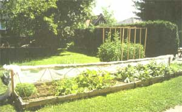

Cold Frame Gardening
February/March 1992
By Ronald C. Sawyer
A New Design For Early Garden Success
ALMOST ANYONE CAN grow a good garden in the summertime. But what about harvesting crops in the middle of spring, when your neighbors are just beginning to turn over their own ground? It's the ability to create an early harvest that separates the superior gardener from the run of the mill. Here in upstate New York, where we have frosts as late as May, I start eating from my garden in mid-April. How is this possible? A plastic-tunnel cold frame. With forethought and timely execution, you too can have a garden earlier than you ever thought possible.
Cold-Frame Design and Construction
Siting the cold frame correctly is essential to success. On any piece of property there is usually some far warmer area. This is the one you should seek out for the cold frame. But a good site alone will not allow most plants to survive cold nighttime temperatures. For that, you must create an artificial environment, one that will allow your seeds to germinate and your plants to prosper.
My introduction to such protection occurred when I lived in Spain many years ago. The government was encouraging small producers to raise early crops by setting up inexpensive tuneles de plastico in the late winter. Over the years I have tried the tunnel and many more elaborate designs for protection of crops from the early-season cold. In considering a cold-frame design, you should apply the following criteria: One, it should be easy to build and made of standard materials. Two, it should be cheap. Three, it should be fast to put up and take down. And four, it should not only keep your plants warm, but it should keep them from getting too hot.
The following design meets all these criteria. The frame itself is made of 2 x 4s nailed together to make a bed four feet wide by 24 feet long. It is simply set on top of the prepared ground and staked down. As the level of the soil goes up over time, additional 2 x 4s can be toenailed into the lower layer to make the frame higher.
The components of the plastic tunnel cover are also simple. Go down to your local construction-supply company and have them cut some eight-foot sections of 3/8” rebar. When you get home, jam the rebar against something and bend each section into a modified hooplike shape, because it is better if the last 14 inches or so of each end is straight so it can be pushed into the ground easily. (The bending takes a lot of effort, so borrow a strong friend if you cannot do it yourself.) Push the hoops into the ground on the outside of the frame at about 26-inch centers (which offers enough support to hold a small snow load) and secure each one to the frame with a couple of nails. Then spread 28 feet of eight-feet-wide plastic over the hoops and the framed garden, with a four-foot overhang on each end.
Secure one of the long sides of the cover by sandwiching the plastic between some nailer strips and the frame itself. This side will not have to be removed until the entire cover is put away after all danger of frost has passed. The other long side and the ends are arranged for ventilation, which can be achieved by turning back one of the long sides (a necessary step anyway when you wish to work in the garden). This "mobile" side should be secured to an opening wand, which is made of 1" x 2" overlapping furring strips that have been clasp-nailed together to make a continuous length of 24 feet.
Again, the plastic should be sandwiched between nailer strips (scrap lath, screen molding, etc.) and the opening wand so that the nail heads do not rip through the plastic. The cold frame can be opened entirely simply by rolling up the plastic onto the opening wand, which is then placed on the opposite or fixed side of the frame. But actually-no matter how hot the weather gets-the plastic hardly needs to be completely rolled back. Instead, it can be rolled up halfway, so it is sitting on top of the hoops, secured by placing the ends of the furring-strip wand into notched vertical 2 x 4s that have been nailed to the end of the frame. (The bottom of the notches are at the same height as the top of the hoops.)
End ventilation, which is almost always sufficient, is even easier. The ends are normally kept loosely rolled in a spare four-foot wooden piece sitting on the ground. To ventilate, just unroll the plastic from the piece of wood, roll it back up on itself, secure it with a clip or stuff it between the last metal hoop and the vertical support member. With both ends open you get good cross-ventilation.
No matter how high the winds or how fierce the spring rains and snow, this cold frame sits proudly. Most snow simply slides off as it falls, and any that attempts to accumulate soon melts away from the heat radiated by the dark soil within. Moreover, the whole thing is really cheap, averaging out at less than $10 per year.
Setting Up and Managing a Cold Frame
I always set up and plant the garden in the second half of March. Because my soil is so black, it is free of snow and has thawed out long before the surrounding area. I wait for one of those unusually warm days that we sometimes get in this area at the end of the winter when it is a joy to be working outside. (One March, I went cross-country skiing in a park just 30 miles from here in the morning and planted my garden the same afternoon.) With all materials on hand, I can construct the cold frame and plant the entire garden in a long afternoon.
In my many years of managing the cold frame, I have never had any trouble with cold damage despite spells of weather in the teens. Of course, I do not seed or set out any cold-sensitive plants early in the season. However, I have persistently experienced two kinds of serious problems that call for constant vigilance.
The first is damage caused by excessive heat. The only time I feel comfortable with having the tunnel completely sealed is when nothing has germinated yet. Indeed, the tunnel is a marvelous seed germinator. But the heat so wonderful for germination is excessive once the seedlings have emerged. A cloudless day in the 70s can take the temperature in the tunnel to 150°F, and the crops you have nursed through the fierce March weather will wilt, scorch, bake, and finally perish in the April sun. This has happened to me more than once. Each year I vow: Never again.
Therefore, think ventilation. When in doubt, ventilate. If you go away on all but the coldest of days, ventilate. End ventilation is almost always sufficient. The lovely moist and warm environment can turn to a savage and killing heat literally in a matter of minutes if the clouds blow away. A little cold wind on your plants will do small damage compared to excessive temperatures.
The second problem arises from too much organic matter in the garden. If you are like me, you take pride in the lovely structure of your soil. But too often my compost is not quite as broken-down as it should be. Including this kind of stuff-or worse yet, manure-in a plastic tunnel garden is a recipe for failure. Fungi thrive in this kind of environment. The result will be rampant damping off and other diseases. After having lost several crops to this problem, I now exercise utmost caution. I keep this garden a little sparer on organic content than an open-air one. If there is any indication of weakness in the soil I can always add a bit of liquid fertilizer, such as fish or seaweed emulsion.
Irrigation
Setting up a handy irrigation system within the cold frame is the smartest move I ever made. Trying to water from the outside with a watering can or hose is always a bit of a hassle and might involve turning the plastic completely back at an inopportune time.
But a fixed hose is just the right thing. I affix a 50-foot hose to the top edge of the 2 x 4 frame, beginning on a long side one foot from the end and finishing a near circuit of the frame on the other side, one foot from that end. (That's 23 feet down one side, across the four-foot end, and back 23 feet on the other side, with a two-foot tail as a connector.) I then poke holes in the hose with a pin at regular intervals so that the water squirts directly into the garden. I have found this set-up far superior to and certainly much cheaper than any custom-made irrigation system that I can buy. I seal one end of the irrigation hose with a cap and connect the other end to a hose which runs to a faucet.
The total cost of this semi-automatic irrigation system is five bucks. One turn of the faucet and the garden waters itself. How much water you should apply takes quite a bit of experience and observation. You do not want to overwater for the same reason you do not want to have fresh manure in your frame-it tends to promote fungal growth and plant disease.
I particularly like to have some fast-growing things so I can amaze my friends with
garden food when the snow is barely off the ground.
The day that I plant the garden, I water it heavily and then seal it shut. Then, no more watering is required at least until the seeds germinate. After that, watering depends on the temperature, the robustness of foliage growth, and the amount of ventilation. Obviously, with no ventilation, your system is a closed one and should require almost no additional irrigation. But the moment you ventilate, you will have to irrigate in order to supply the rapidly growing plants with the moisture that they need.
One other advantage of this system is that the whole thing stays in place after you have put away the plastic. I have often thought of adding an automatic or even computerized timer to regulate the whole system, but have decided against it. Besides the additional cost, such automation would begin to make me feel superfluous.
Crops and Crop Rotation
You will select those crops for the cold frame that most appeal to you and that suit the particular conditions found under plastic. Because of the limited space available in the cold frame, you will probably want to plant very intensively, as in French intensive gardening. This technique measures its success by what percentage of the entire bed is a completely covered with foliage at each moment of the season. I call this "the art of plenitude."
I try to plant the entire bed the first day of the season with a spacing that still allows for a couple more plantings within the first one. The initial planting comprises crops that can take some cool weather, mostly various kinds of greens for cooking or eating in salads. The second planting is of seeds of warm-weather crops, and the next one is of seedlings of warm-weather crops. I aim to get several crops from each bit of space, by rotation, by planned competition, and by understory/overstory (sometimes even tri-story) sharing of space. Of course, there are many crops that I would never think of planting in the cold frame at all-such as peas, onions, potatoes, etc.-but instead place directly in the regular garden.
My first planting of greens is a real blessing after a cold winter because I am a real fresh-vegetable junkie. By about May 1, I have converted a third of my diet to garden salad and cooked greens and I try to stay that way until the following November, long after most people's gardens have gone kaput. I particularly like to have some fast-growing things so I can amaze my friends with garden food when the snow is barely off the ground.
There are some standards I plant every year because they have stood the test of time. The first and fastest is garden cress, which seems to sprout the moment the seeds hit the damp earth, and is ready to pick in just a couple of weeks. Next are radishes, which I broadcast thickly, thinning some of the greens for immediate consumption and letting the rest develop into radishes themselves. I have really come to prefer white radishes during the last few years and have stopped planting the red ones.
Then I plant coriander, having soaked the seeds on my windowsill for a week. Just by accident I learned that coriander germinates much better if its tough outer seed shell is rotted through.
Another standard crop is lettuce, which I never go without. I usually plant most of the year's lettuce early in the cold frame by broadcasting a mixture of seeds of early season, mid-season, and late-season lettuce together and then thinning them quite severely, leaving some head type to carry me through most of the summer. This year for the first time I planted a commercially provided "mesclun mix," which I harvest frequently by cutting back with a scissors. I also generally plant what I have come to call "yuppie greens," such as arugula and radicchio. And finally, I always plant a lot of spinach, which is deliciously succulent when grown under plastic.
But salad and cooking greens are only part of the cold-frame garden. Once the soil warms up a bit, I plant warm-season crops from seed. At one end of the garden I plant zucchini and on the other end cucumbers. As they grow, I gradually pick and eat all their competition. When the plastic is removed, the huge zucchini plants hang way outside of the frame. At the other end, I train the cucumbers to a six-foot netted trellis, which uses remarkably little planting space. As the cucumbers grow towards the sky, they give a bountiful harvest, much more than when allowed to lie on the ground.
The cold frame also really comes in handy for tomato and pepper crops. I set out plants four to six weeks earlier than I would otherwise. Long ago, when I had a one-acre garden and was selling vegetables on the side, I planted 100 tomato plants. Now I plant just eight, which gives me more than enough tomatoes wrapped in newspaper in my attic. I set the tomato plants out at previously marked spots between rows of greens and harvest the greens as they compete with the tomatoes. I also support the tomatoes on six-foot-high wooden trellises and prune them rather severely. The partial shade made by the trellis is actually appreciated by the lettuce and a few other understory greens once the torrid days of July arrive and they are thinking of going to seed, which for my purposes is nothing but a betrayal.
Finally, I add pepper plants to the cold frame. Peppers do not do very well in upstate New York; they seem to stand around for a long time, as if to say, "You know, the nights ought to be hotter around here if you really want me to grow." But I've managed to have some success by planting when the soil is quite warm and by reducing competition to a minimum. With some prodding, the plants can produce nice bell, banana, and hot peppers in the second half of August and the entire month of September. Finally, the cold frame can also be used for raising a variety of seedlings for the rest of your garden.
I take the plastic tunnel down about June 1, when all danger of frost is past and the plants want more room anyway. The plastic should be hosed down, air dried, and rolled in a black plastic garbage bag, to be stored until the following year. The other materials should also be cleaned and put away so that the next spring they will be ready to go at the drop of a hat. Of course, the frame itself should be left up permanently. Presumably, one could reassemble the tunnel for autumn crops, but the garden does so well without protection at that time of year that I do not bother.
Cold frames have been around for a long time. The one I have described here is cheap and convenient. If you use it just one year, it is unlikely you will ever want to garden again without it.
|
 Partial ventilation keeps the cold frame from excessive overheating. |
 By late spring the cold frame should be fully ventilated, and the plastic may be stored in garbage bags for use next year. |
The cold frame is well-protected against an April snowstorm. |